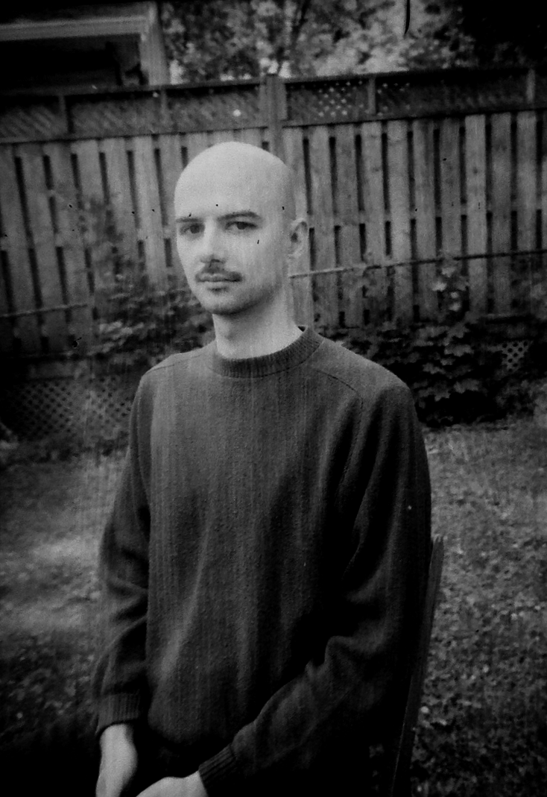

Callon Murphy is an amateur filmmaker and software developer currently residing in Kitchener, Ontario on unceded land. His work blends personal memories and formal experiments through various DIY digital and analog techniques. Delivered with sparse sound design and typically without narration, Callon's films and videos deal with the falsity of image-making, the futility of technology, and historical subjectivity.
To date, all of his films have been produced and distributed independently.

His works have screened at festivals around the world including:
the8fest,
Obskura Festival,
Engauge Experimental Film Festival,
Winnipeg Underground Film Festival,
Experimental Superstars,
Film Under Severe Experiment (FUSE),
Fisura Festival Internacional de Cine y Video Experimental,
MISE Festival,
and Suspaustas Laikas.
Contact